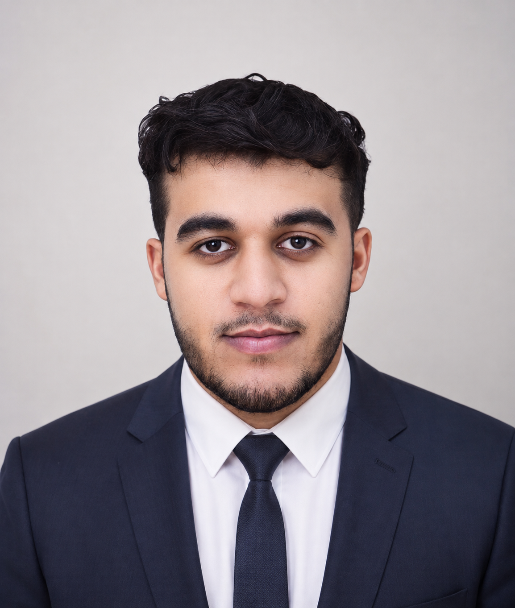

</>
Front-end
Interfaces web responsive, composants réutilisables et intégration d’API.
Développeur Web Full Stack Junior, titulaire d’une Licence en Ingénierie des Systèmes Informatiques et d’un diplôme TS en Développement Digital. Je développe des applications web et desktop avec React, Laravel et Java.
Explorer mes projets↗Télécharger mon CV ↓
Mon parcours associe formation en ingénierie informatique et pratique du développement. Mes expériences en front-end et en application web m’ont amené à travailler sur des interfaces responsive, des API, la conception UML et des bases de données.
Du front-end au back-end, avec des bases en systèmes, réseaux et conception logicielle.
Interfaces web responsive, composants réutilisables et intégration d’API.
Applications web et desktop, modélisation et gestion des données.
Conception UML, travail Agile et outils de développement. Bases en réseaux TCP/IP.
Développement d’interfaces Next.js pour une marketplace multi-vendeurs. Composants UI réutilisables, pages dynamiques, intégration d’API et design responsive.
Analyse des besoins, conception UML et développement d’une application de gestion de bibliothèque avec Laravel, PHP et MySQL.
Java & POO, systèmes Windows/UNIX, TCP/IP, SQL/PL-SQL, Python, Data Science et IA.
Front-end, back-end, bases de données, UML et gestion de projets Agile.
Projets présentés dans mon CV. Retrouvez mes dépôts et leur documentation sur GitHub.
Projet de gestion de restaurant développé avec Java et JavaFX, associé à une base MySQL.
Projet front-end avec React, Redux et Bootstrap, intégrant des API.
Application de gestion de bibliothèque avec Laravel, PHP et MySQL, de la conception au développement.
À l’écoute d’opportunités pour apprendre,
contribuer et évoluer dans l’informatique.
Une opportunité, un projet ou un premier échange ?
elghazouanisamad@gmail.com ↗
+212 690 853 577
LinkedIn ↗ · GitHub ↗